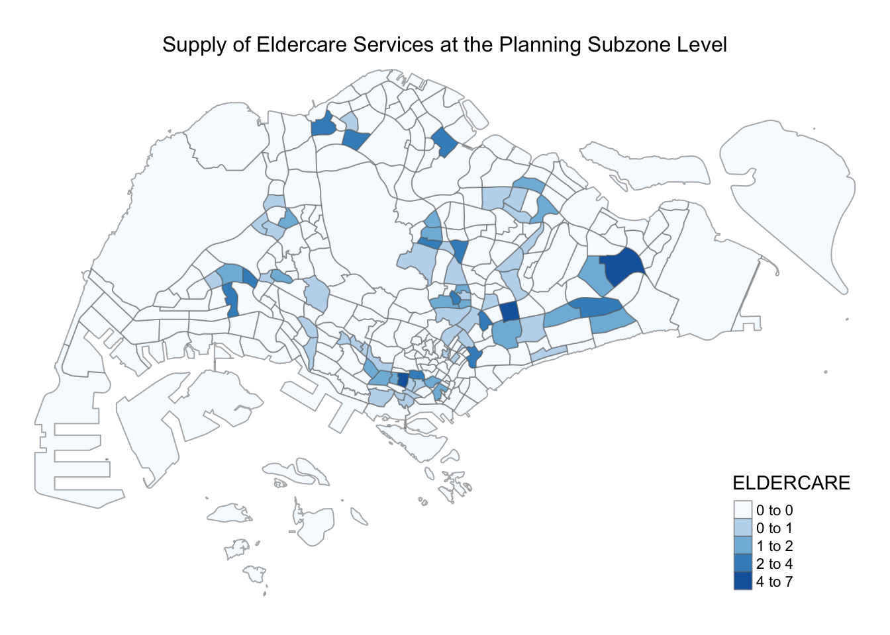
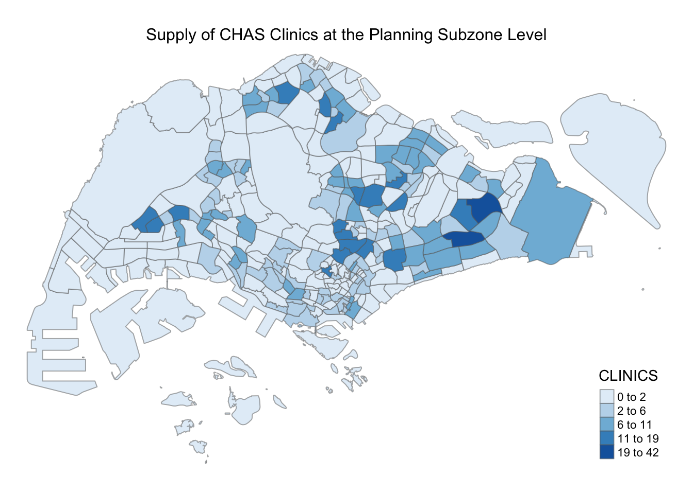

Spatial Analysis of the Distribution Pattern of Healthcare Facilities and Amenities in Singapore Using Geographic Information Analysis
Aging population has always been a prominent issue in Singapore. The percentage of individuals over age 65 between 2010 and 2020 increased from 9% to 15.2%. By 2030, one in four Singaporeans will be aged 65 and above. While there are many efforts by the government to solve this problem, it is inevitable that people will age and all of us will grow old one day.
However, in this small city-state, would its current urban landscape be enough to support its elderly?
It is essential that relevant facilities and amenities are strategically built and readily available for elderly in this land-scarce Singapore.
Through this project, we aim to build a Shiny application to:
Analyse the supply and demand of age-friendly amenities and facilities in subzone planning area
Analyse the availability of age-friendly amenities and facilities in subzone planning area
Determine which areas needs more age-friendly amenities and facilities
packages = c('tmap', 'tidyverse','rvest','stringr','rebus','lubridate','janitor',
'sf', 'sp', 'caret',
'geojsonio', 'stplanr',
'reshape2', 'broom')
for(p in packages){
if(!require(p, character.only = T)){
install.packages(p)
}
library(p, character.only = T)
}# url <-'https://www.moh.gov.sg/upcoming-and-completed-healthcare-facilities'
# content <- read_html(url)
# tables <- content %>% html_table(fill = TRUE)
# length(tables)
# first_table <- tables[[1]]
#
# for (item in tables){
# names = item[2]
# adds = item[3]
# status = item[4]
# }# Scraping test (from ah kam's link)
# get_item <- function(html){
# html %>%
# # The relevant tag
# html_nodes('.sfContentBlock') %>%
# html_text() %>%
# # Trim additional white space
# str_trim() %>%
# # Convert the list into a vector
# unlist()
# }
# get_data_table <- function(html){
# item <- get_item(html)
# # Combine into a tibble
# combined_data <- tibble(items = item)
# }
# get_data_from_url <- function(url){
# html <- read_html(url)
# get_data_table(html, company_name)
# }
# scrape_write_table <- function(url){
#
# page <- read_html(url)
#
# # Extract the number of pages that have to be queried
# # latest_page_number <- get_last_page(first_page)
#
# # Generate the target URLs
# # list_of_pages <- str_c(url, '?page=', 1:latest_page_number)
#
# # Apply the extraction and bind the individual results back into one table,
# # which is then written as a tsv file into the working directory
# page %>%
# # Apply to all URLs
# map(get_data_from_url) %>%
# # Combine the tibbles into one tibble
# bind_rows() %>%
# # Write a tab-separated file
# write_tsv(str_c('.tsv'))
# }
# scrape_write_table(url)
# moh_data <- read_tsv('MOH.tsv')
# tail(moh_data, 5)mpsz <- st_read(dsn = "data",
layer = "MP14_SUBZONE_WEB_PL")## Reading layer `MP14_SUBZONE_WEB_PL' from data source `/Users/neojiahui/Documents/GitHub/GEO-Team-11/data' using driver `ESRI Shapefile'
## Simple feature collection with 323 features and 15 fields
## geometry type: MULTIPOLYGON
## dimension: XY
## bbox: xmin: 2667.538 ymin: 15748.72 xmax: 56396.44 ymax: 50256.33
## projected CRS: SVY21popdata <- read_csv("data/respopagesextod2011to2020.csv")
eldercare <- st_read("data/ELDERCARE.kml")## Reading layer `ELDERCARE' from data source `/Users/neojiahui/Documents/GitHub/GEO-Team-11/data/ELDERCARE.kml' using driver `KML'
## Simple feature collection with 133 features and 2 fields
## geometry type: POINT
## dimension: XYZ
## bbox: xmin: 103.7119 ymin: 1.271472 xmax: 103.9561 ymax: 1.439561
## z_range: zmin: 0 zmax: 0
## geographic CRS: WGS 84chas_clinic <- st_read("data/chas-clinics-kml.kml")## Reading layer `MOH_CHAS_CLINICS' from data source `/Users/neojiahui/Documents/GitHub/GEO-Team-11/data/chas-clinics-kml.kml' using driver `KML'
## Simple feature collection with 1167 features and 2 fields
## geometry type: POINT
## dimension: XYZ
## bbox: xmin: 103.5818 ymin: 1.016264 xmax: 103.9903 ymax: 1.456037
## z_range: zmin: 0 zmax: 0
## geographic CRS: WGS 84popdata <- read_csv("data/respopagesextod2011to2020.csv")mpsz3414 <- st_transform(mpsz, 3414)
st_crs(mpsz3414)## Coordinate Reference System:
## User input: EPSG:3414
## wkt:
## PROJCRS["SVY21 / Singapore TM",
## BASEGEOGCRS["SVY21",
## DATUM["SVY21",
## ELLIPSOID["WGS 84",6378137,298.257223563,
## LENGTHUNIT["metre",1]]],
## PRIMEM["Greenwich",0,
## ANGLEUNIT["degree",0.0174532925199433]],
## ID["EPSG",4757]],
## CONVERSION["Singapore Transverse Mercator",
## METHOD["Transverse Mercator",
## ID["EPSG",9807]],
## PARAMETER["Latitude of natural origin",1.36666666666667,
## ANGLEUNIT["degree",0.0174532925199433],
## ID["EPSG",8801]],
## PARAMETER["Longitude of natural origin",103.833333333333,
## ANGLEUNIT["degree",0.0174532925199433],
## ID["EPSG",8802]],
## PARAMETER["Scale factor at natural origin",1,
## SCALEUNIT["unity",1],
## ID["EPSG",8805]],
## PARAMETER["False easting",28001.642,
## LENGTHUNIT["metre",1],
## ID["EPSG",8806]],
## PARAMETER["False northing",38744.572,
## LENGTHUNIT["metre",1],
## ID["EPSG",8807]]],
## CS[Cartesian,2],
## AXIS["northing (N)",north,
## ORDER[1],
## LENGTHUNIT["metre",1]],
## AXIS["easting (E)",east,
## ORDER[2],
## LENGTHUNIT["metre",1]],
## USAGE[
## SCOPE["unknown"],
## AREA["Singapore"],
## BBOX[1.13,103.59,1.47,104.07]],
## ID["EPSG",3414]]eldercare3414 <- st_transform(eldercare, 3414)
st_crs(eldercare3414)## Coordinate Reference System:
## User input: EPSG:3414
## wkt:
## PROJCRS["SVY21 / Singapore TM",
## BASEGEOGCRS["SVY21",
## DATUM["SVY21",
## ELLIPSOID["WGS 84",6378137,298.257223563,
## LENGTHUNIT["metre",1]]],
## PRIMEM["Greenwich",0,
## ANGLEUNIT["degree",0.0174532925199433]],
## ID["EPSG",4757]],
## CONVERSION["Singapore Transverse Mercator",
## METHOD["Transverse Mercator",
## ID["EPSG",9807]],
## PARAMETER["Latitude of natural origin",1.36666666666667,
## ANGLEUNIT["degree",0.0174532925199433],
## ID["EPSG",8801]],
## PARAMETER["Longitude of natural origin",103.833333333333,
## ANGLEUNIT["degree",0.0174532925199433],
## ID["EPSG",8802]],
## PARAMETER["Scale factor at natural origin",1,
## SCALEUNIT["unity",1],
## ID["EPSG",8805]],
## PARAMETER["False easting",28001.642,
## LENGTHUNIT["metre",1],
## ID["EPSG",8806]],
## PARAMETER["False northing",38744.572,
## LENGTHUNIT["metre",1],
## ID["EPSG",8807]]],
## CS[Cartesian,2],
## AXIS["northing (N)",north,
## ORDER[1],
## LENGTHUNIT["metre",1]],
## AXIS["easting (E)",east,
## ORDER[2],
## LENGTHUNIT["metre",1]],
## USAGE[
## SCOPE["unknown"],
## AREA["Singapore"],
## BBOX[1.13,103.59,1.47,104.07]],
## ID["EPSG",3414]]clinic3414 <- st_transform(chas_clinic, 3414)
st_crs(clinic3414)## Coordinate Reference System:
## User input: EPSG:3414
## wkt:
## PROJCRS["SVY21 / Singapore TM",
## BASEGEOGCRS["SVY21",
## DATUM["SVY21",
## ELLIPSOID["WGS 84",6378137,298.257223563,
## LENGTHUNIT["metre",1]]],
## PRIMEM["Greenwich",0,
## ANGLEUNIT["degree",0.0174532925199433]],
## ID["EPSG",4757]],
## CONVERSION["Singapore Transverse Mercator",
## METHOD["Transverse Mercator",
## ID["EPSG",9807]],
## PARAMETER["Latitude of natural origin",1.36666666666667,
## ANGLEUNIT["degree",0.0174532925199433],
## ID["EPSG",8801]],
## PARAMETER["Longitude of natural origin",103.833333333333,
## ANGLEUNIT["degree",0.0174532925199433],
## ID["EPSG",8802]],
## PARAMETER["Scale factor at natural origin",1,
## SCALEUNIT["unity",1],
## ID["EPSG",8805]],
## PARAMETER["False easting",28001.642,
## LENGTHUNIT["metre",1],
## ID["EPSG",8806]],
## PARAMETER["False northing",38744.572,
## LENGTHUNIT["metre",1],
## ID["EPSG",8807]]],
## CS[Cartesian,2],
## AXIS["northing (N)",north,
## ORDER[1],
## LENGTHUNIT["metre",1]],
## AXIS["easting (E)",east,
## ORDER[2],
## LENGTHUNIT["metre",1]],
## USAGE[
## SCOPE["unknown"],
## AREA["Singapore"],
## BBOX[1.13,103.59,1.47,104.07]],
## ID["EPSG",3414]]sum(is.na(mpsz3414))## [1] 0sum(is.na(popdata))## [1] 0sum(is.na(eldercare3414))## [1] 0sum(is.na(clinic3414))## [1] 0mpsz3414$`ELDERCARE` <- lengths(st_intersects(mpsz3414, eldercare3414))tm_shape(mpsz3414)+
tm_fill(col = "ELDERCARE",
palette = "Blues",
style = "jenks") +
tm_layout(main.title = "Supply of Eldercare Services at the Planning Subzone Level",
main.title.position = "center",
main.title.size = 1,
legend.height = 0.45,
legend.width = 0.35,
legend.outside = FALSE,
legend.position = c("right", "bottom"),
frame = FALSE) +
tm_borders(alpha = 0.5)
mpsz3414$`CLINICS` <- lengths(st_intersects(mpsz3414, clinic3414))tm_shape(mpsz3414)+
tm_fill(col = "CLINICS",
palette = "Blues",
style = "jenks") +
tm_layout(main.title = "Supply of CHAS Clinics at the Planning Subzone Level",
main.title.position = "center",
main.title.size = 1,
legend.height = 0.45,
legend.width = 0.35,
legend.outside = FALSE,
legend.position = c("right", "bottom"),
frame = FALSE) +
tm_borders(alpha = 0.5)